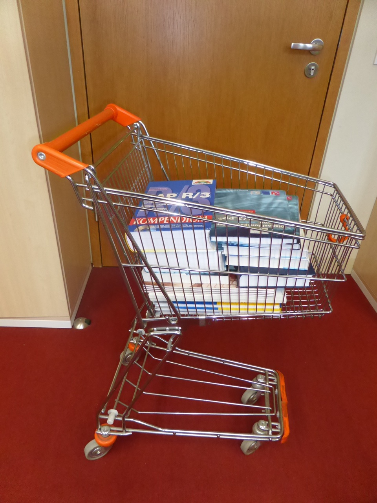
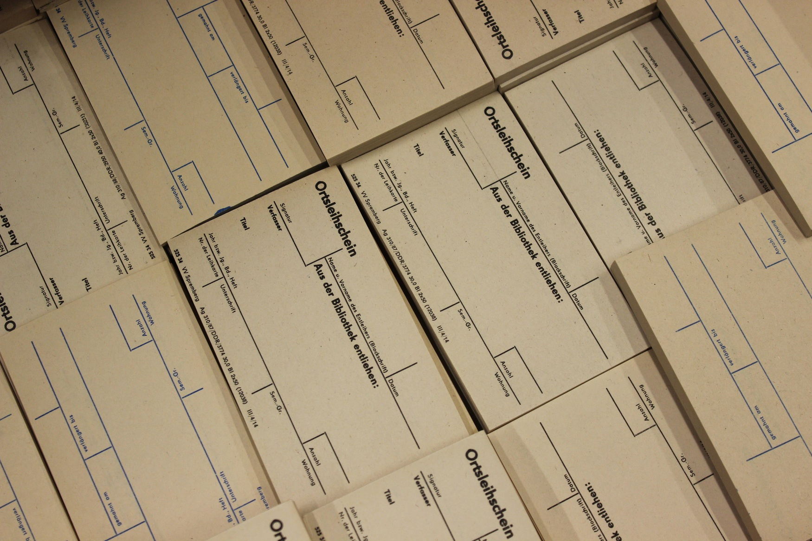
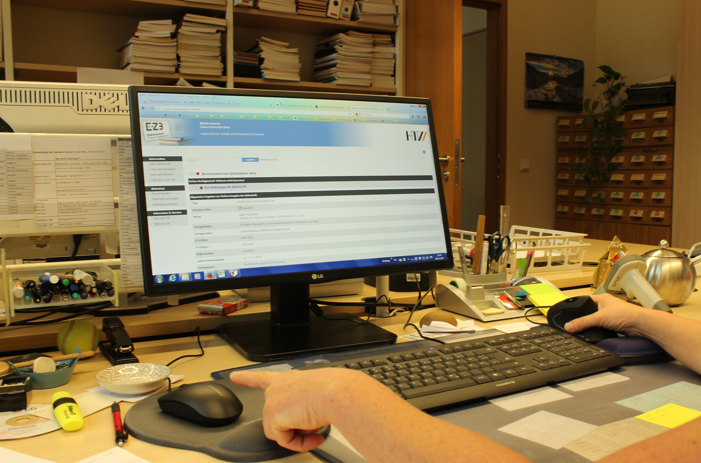
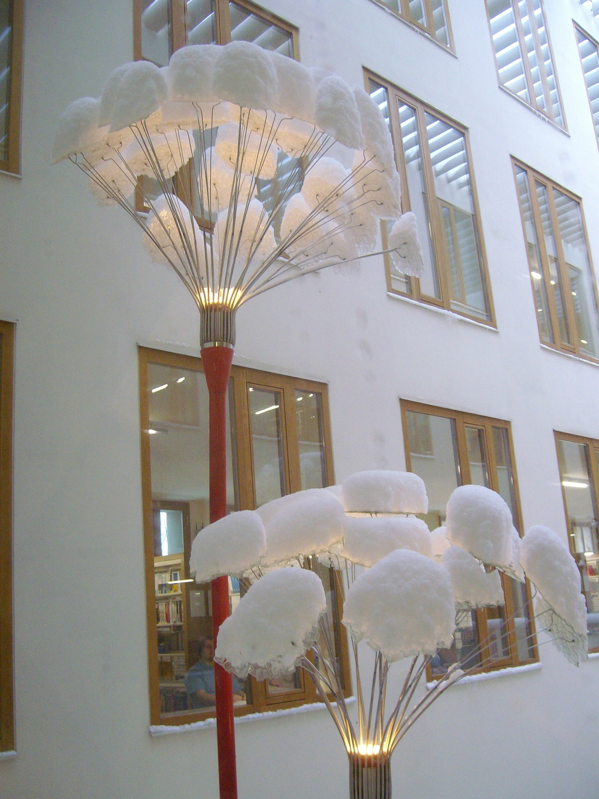
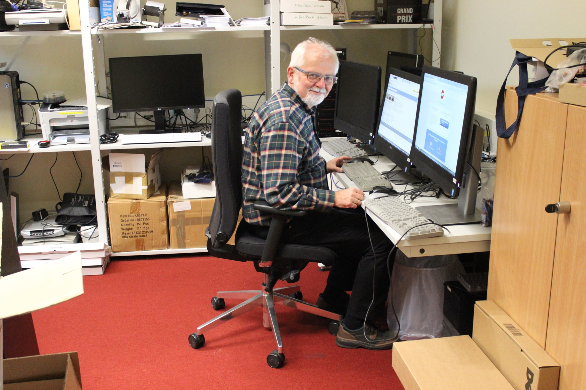
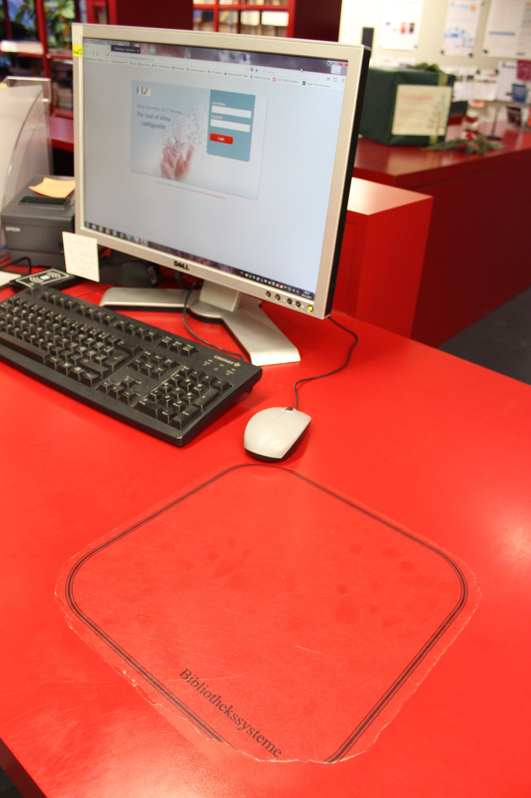

Zeigen Sie uns den Ort in Ihrer Bibliothek, an dem Sie die meiste Zeit verbringen. Was ist das für ein Ort? Wieso sind Sie die meiste Zeit dort?

Dieser gefüllte Bücherwagen ist ein freudiger Anblick für mich, denn wir erwerben nicht nur E-Books, sondern auch noch sehr viele Printbücher. Das lässt mein Herz als Bibliotheksassistentin höher schlagen. Das gute Stück ist flexibel einsetzbar. Wir nutzen ihn nicht nur um unsere Bücher einzustellen, sondern auch für den Transport von Geschirr für Veranstaltungen, Gartengießkannen für Bibliothekspflanzen und andere Utensilien. Er ist wendig und passt auch durch die kleinsten Gänge.
Der Prototyp stammt noch aus der DDR-Zeit und war damals als Einkaufswagen in DDR-Kaufhallen im Einsatz. Erworben haben wir ihn in den Nachwendejahren und er und neun andere Einkaufswagen sind seit nunmehr 25 Jahren in unserer Bibliothek zu finden. Dieses Gefährt erleichtert uns die Arbeit und ist aus unserem Bibliotheksalltag nicht mehr wegzudenken.
~ Kerstin, Erwerbung, im Team seit 1979

Im Zeitalter der Technik sind solche Papier-Leihscheine natürlich nicht mehr in Gebrauch.1 Doch würde es wider Erwarten zu einem Stromausfall oder technischen Problemen kommen, sind diese Relikte aus der Vergangenheit bei uns sofort wieder im Einsatz. So können wir unseren Nutzern auch ohne Stromversorgung noch die gewünschten Bücher ausleihen. Beim Ausfüllen des Leihscheins müssen wir Bibliothekare mittlerweile aber helfen, da die Leser von heute damit nie konfrontiert wurden und sich eher schwertun. Wenn aber alle Stricke reißen, sind wir auf jeden (Not-)Fall vorbereitet.
~ Rossi, Katalogisierung, im Team seit 1973

Gemütlich auf dem Sofa sitzen, den Laptop auf dem Schoß und in den elektronischen Medien seiner Bibliothek stöbern, sie erkunden, lesen und dabei sein Wissen mehren… oh du schöne Studentenzeit!
Aber was bedeutet das für uns Bibliotheksmitarbeiter, die sich um die E-Medien für unseren Studenten auf dem Sofa kümmern?
Wir data librarians
haben kaum noch ein Buch, das klassische Medium der Bibliotheken, in der Hand. Vielmehr verbringen wir unseren Arbeitstag vorrangig am Bildschirm, arbeiten mit Identifiern, Datenquellen, Metadaten, Lizenzen, elektronischen Sammlungen, Portfolios, und Linkresolvern. Das Gebiet der E-Medien entwickelt sich enorm dynamisch und hält ständig Neuerungen bereit. Wir Mitarbeiter in der Bibliothek müssen dran bleiben
an den technischen Entwicklungen, uns informieren sowie lernbereit und ständig offen für Neues sein.
Nicht zuletzt ist die tägliche Bildschirmarbeit aber auch ein harter Job für Augen, Schultern und die Maus-Hand. Um aber die einseitige Belastung für Schulter und Hand besser zu verteilen, arbeite ich daher mit 2 Mäusen – vormittags rechts und nachmittags links. Zu Beginn stellte sich die linke Hand (als Rechtshänder) recht störrisch und ungelenk an. Mit etwas Geduld war es mir irgendwann möglich, mit der linken und der rechten Hand zu arbeiten und ich möchte jedem Bildschirmarbeiter empfehlen, dies auszuprobieren. Es lohnt sich! Da sich die rechte Hand aber immer mal wieder vordrängelt, spendierte ich ihr eine anatomische Maus (für 20 €) – dies ist meine zweite Empfehlung.
Und der Student auf dem Sofa? Gehen wir davon aus, dass er fündig wurde und ohne Problem zu seinem gewünschten Volltext gelangte.
~ Ute, Metadaten, im Team seit 2003

Ein Garten ist für die Seele wie ein Buch für den Geist
– da lag es für das Dresdner Künstlerehepaar Hempel nahe, eine Glasblumeninstallation in das Herz der Bibliothek zu setzen. Die fragilen Blumen im Atrium sind Sommers wie Winters Wind und Wetter ausgesetzt, dennoch blühen
sie geschützt zwischen den Grundmauern im Inneren der Bibliothek. Sie bilden nicht nur einen wirkungsvollen Kontrast zur Schlichtheit der Architektur des Gebäudes, sondern auch zur Sachlichkeit der Bücher. Doch mit ihrem durchsichtigen, zerbrechlichen, bei Dunkelheit erleuchteten Glas stehen sie für mich auch noch für etwas Anderes: den Auftrag der Bibliothek, die Grundsätze geistiger Freiheit zu wahren, freie sowie allgemein zugängliche Quellen bereitzustellen und dadurch die informationelle Grundversorgung sicherzustellen – ein elementares Grundrecht, das, genauso wie unsere Glasblumen, bei jedem Wetter, beschützt und bewahrt werden muss.
~ Rebecca, Informationsvermittlung, im Team seit 2015
Was würden Sie vermissen, wenn es nicht mehr da wäre? Wieso würden Sie es vermissen?

Auf die Frage, was ich vermissen würde in der Bibliothek, wenn es nicht mehr da wäre, fallen mir spontan ganz viele Dinge ein. Zuallererst das gedruckte Buch. Es wäre für mich sehr schmerzlich, wenn keine gedruckten Bücher mehr in den Regalen der Bibliothek stehen würden. Bücher machen eine Bibliothek erst zu einer Bibliothek. Als zweites denke ich an die Nutzer unserer Bibliothek. Für sie sind wir da, sammeln Informationen, erschließen diese, stellen sie für sie bereit und helfen ihnen, die Informationen zu finden. Unsere Nutzer sollen sich bei uns wohlfühlen, gerne zu uns kommen, die Bibliothek als dritten Ort wahrnehmen. Was wäre unsere Arbeit ohne sie? Dann gibt es noch so viele (technische) Hilfsmittel, die einem die Arbeit erleichtern, die man auf keinen Fall missen möchte und auf die man auch gar nicht mehr verzichten könnte.
Aber am Ende habe ich mich für meinen Kollegen entschieden, der im nächsten Jahr in den Ruhestand geht und mich durch meine Ausbildung und ersten Arbeitsjahre begleitet hat. Ihn werde ich vermissen, als Mensch, Kollegen und Freund. Ich habe sehr viel von ihm gelernt, er hat mich mitgenommen, unterstützt und motiviert. Er ist immer ein Ansprechpartner für mich. Der Wandel im bibliothekarischen Tätigkeitsfeld ist rasant. Fähigkeiten, die vor 20 Jahren wichtig waren, wurden abgelöst oder sind obsolet. Mein Kollege bestärkte mich daher darin, ein Fernstudium zu beginnen. Veränderungen muss man mutig begegnen, denn selbst wenn man lieber an den alten Gewohnheiten festhalten möchte, ist doch das Leben und damit auch die Arbeit etwas, das von Veränderungen lebt.
~ Katja, Zeitschriften, im Team seit 1998
Zeigen Sie uns Spuren der Bibliotheksnutzung. Gibt es dazu eine Geschichte?

Kurz vor dem Umzug der Bibliothek in unseren Neubau vor nunmehr elf Jahren führten wir die Verbuchung und Buchsicherung über RFID ein. Neben zahlreichen anderen Auswirkungen auf die verschiedensten Arbeitsschritte in der Bibliothek wirkt sich diese Technologie auch auf die Handgriffe während der Ausleihe aus: Der Handscanner entfällt und die Bücher müssen nicht mehr zum Scannen gehoben und gedreht werden, sondern werden einfach über die Theke geschoben
.
Damit ist der Thekenaufkleber, welcher die Platzierung der RFID-Antenne markiert, ein Zeichen
a) für die Entlastung der Mitarbeiter von monotonen Bewegungen und
b) dass auch im Zeitalter von Digitalisierung und E-Medien das alte Medium
Buch geachtet und genutzt wird.
~ Sabine, Benutzung, im Team seit 1981
Ihre Bibliothek (Name, Adresse, Spezialisierung, was man noch über sie wissen sollte)?
Bibliothek der Hochschule für Technik und Wirtschaft (HTW) Dresden
Beantwortet wurden diese Fragen jeweils von sechs Mitarbeiterinnen aus dem Bibliotheks-Team, unterschiedlich lange im Dienst und in verschiedenen Arbeitsgebieten tätig. Das Team besteht aus 13 BibliotheksmitarbeiterInnen sowie zwei Auszubildenden. Der Bestand ist wirtschaftswissenschaftlich-technischer Natur und umfasst circa 175.000 Printmedien sowie zahlreiche elektronische Angebote auf einer Fläche von 2461 m².
[Anm. d. Red.: Dass Leihscheine andernorts noch in Gebrauch sind, zeigt der Beitrag zur Bibliothek des Landesarchivs Berlin in dieser Ausgabe.]↩